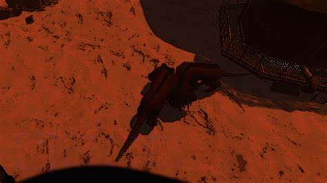
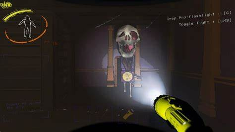

eyeless dogs

Generally hunt in packs. Blind, clumsy, taking guesses at prey’s location. Alerts pack. Attracted to sound, turn off radio and be quiet.
Jester

“Get out of there before it goes ape, you can’t hide from it, just evacuate.” Will follow you around. When its boxed its harmless. Eventually it cranks itself for a good minute, the music gets faster and deeper and a monster bursts out of the box.
Snare Fleas

Suffocates victim. Thrives in dark warm areas. Generally avoids open air/sunlight. Weak Exoskeleton – Beat to death. Seen on Hazard Level B.